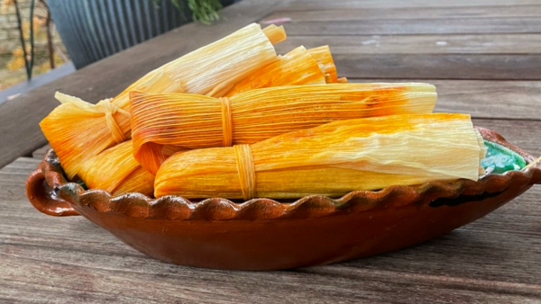

Tamales De Puerco(Red Pork Tamales)

A traditional Mexican winter meal. There are many types of tamales made in different parts
of Mexico but they all have the same structure. They all are made of corn dough(masa) with the main
ingredient in the middle and the whoile thing is wrapped in dried corn husks. This recipe will talk
red pork tamales.
Ingredients
- 1.5 pounds of pork shoulder, cut into chunks
- 2 cups of masa harina(corn masa flour)
- 1 cup of chicken broth
- Half a cup of lard/vegatable shortening
- Quarter cup of chili powder
- 2 tablespoons of cumin
- 2 tablespoons of garlic powder
- 1 tablespoon of salt
- Half a tablespoon of dried oregano
- Quarter tablespoon of cayenne pepper
- 1 package of dried corn husks, soaked in water
Steps
- Mix the pork, chili powder, comin, garlic powder, salt, black pepper, oregano, and cayenne
pepper into a large pot. Cover with water and bring to a boil. Reduce heat, cover, and simmer
for 2-3 hours until pork is tender. Shred with a fork.
- Mix masa harina, lard/vegatable shortening, chicken broth, and salt into a mixing bowl. Mix into a
until a pliable and soft dough forms.
- Drain the corn husks. Spread a thin layer of masa onto each corn husk leaving a border around the edges.
Spoon a tablespoon of pork onto center of masa.
- Fold the sides of corn husk towards the center, then fold the bottom of the husk up. Tie the top of the
tamale with a strip of soaked corn husk.
- Place the tables vertically in a steamer pot filing the pot with water just below the steamer basket.
Steam for 1-2 hours until masa is cooked and firm.
- Serve tamales